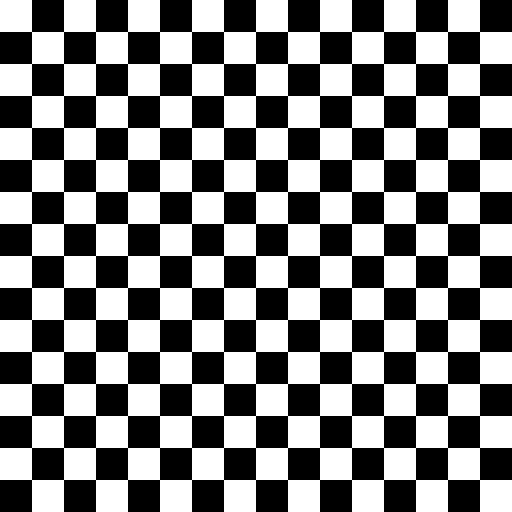
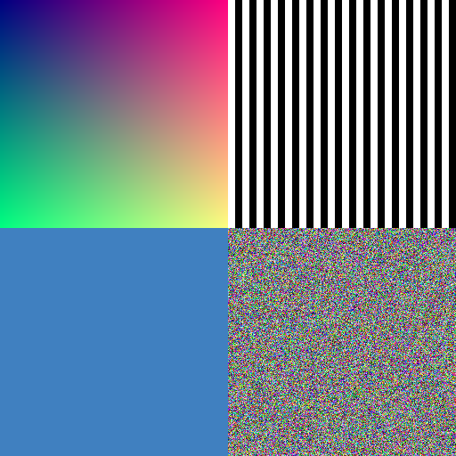

Configuration
Or choose a test image:
Gradient

Checkerboard
Color Bars
Circles

Mixed
How it works
Each device uses its unique ID to deterministically compress the image differently:
- Different frequency coefficients are preserved by each device
- Different quantization matrices are applied
- The reconstruction combines all preserved information
- More devices = better reconstruction quality